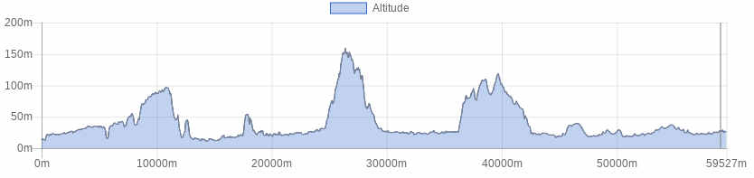

<!doctype html>
<html class="no-js" lang="en" dir="ltr">
  <head>
    <meta charset="utf-8">
    <meta http-equiv="x-ua-compatible" content="ie=edge">
    <meta name="viewport" content="width=device-width, initial-scale=1.0">
    <title>Foundation for Sites</title>
    <link rel="stylesheet" href="css/foundation.css">
    <link rel="stylesheet" href="css/app.css">
  </head>
  <style type="text/css">
  
  
h1.blu {
background-color: #2f5a55;
color: white;
font-size: 1.75rem; 
}

h1.verde {
background-color: #008e80;
color: white;
font-size: 1rem; 
}


h1.bianco {
background-color: white;
color: #506487;
font-size: 1rem; 
}

button.radius, .button.radius {
    border-radius: 3px; font-size:12px;
    }
  button.round, .button.round {
    border-radius: 1000px; font-size:1.2em; background-color:#3fa537}

</style>
  <body>
    <div class="grid-container">
      <div class="grid-x grid-padding-x">
        <div class="large-12 cell">
          <h1 class="verde">&nbsp;</h1>
        </div>
      </div>
      
       <div class="grid-x grid-padding-x">
        <div class="large-12 cell">
        <table>
        <tr>
        <td></td>
        <td><b>Via Francigena riding your MTB or by Train+Bike
</b></td>
        </tr>
        </table>
        
        </div>
      </div>
      
      <div class="grid-x grid-padding-x">
        <div class="large-12 cell">
          <h1 class="verde">&nbsp;</h1>
        </div>	
      </div>
      
      <!------ inizio tabella --->
       <div class="grid-x grid-padding-x">
        <div class="large-12 cell">
        <table>
        
        
         <tr>
        <td><b>Difficulty level</B></td>
        <td></td>
        </tr>
        
        <tr>
        <td><b>Lenght</B></td>
        <td>59 Km</td>
        </tr>
        
        <tr>
        <td><b>Gap</B></td>
        <td>500 + / 480 -</td>
        </tr>

        <tr>
        <td><b>Season</B></td>
        <td>All year</td>
        </tr>

        <tr>
        <td><b>Ground</B></td>
        <td>Gravel road, paved road</td>
        </tr>
        
        <tr>
        <td><b>Description</B></td>
        <td>stile roadbook</td>
        </tr>
        
        
        <tr>
        <td><b>Info on track</B></td>
        <td>
       Since it is easy to reach Altopascio by train, it is also possible to go through the so called Via Francigena between Altopascio and San Miniato.
The way back home goes through the hills of the area of Vinci where Leonardo was from and the local chianti wine area

        </td>
        </tr>

       
       <tr>
        <td><b>Lodging</B></td>
        <td><a href="http://www.bikeexperience.tuscany.it/montecatini-bike-hotels/">Link</a></td>
        </tr>
        
        
        <tr>
        <td><b>Eating</B></td>
        <td>
    Ristorante Adriano<br>
Via Vittorio Veneto, 102<br>
50050 – Cerreto Guidi (FI)<br>
Phone : <a href="tel:0571 55023">+39 0571 55023</a><br>
<a href="http://www.ristoranteadriano.it">Website</a><br><br>

Enoteca Piazza del Popolo<br>
Piazza del Popolo<br>
San Miniato (Pisa)<br>
Phone: <a href="tel:057142548">+39057142548</a><br>
Mobile: <a href="tel:3316646708">+393316646708</a><br>
<a href="https://www.facebook.com/piazzadelpopolo2012/">Facebook</a><br><br>
        
</td>
        </tr>
        
        <tr>
        <td><b>Starting point</B></td>
        <td>
        
      By car or public transport
</td>
        </tr>
        
        </table>
        
        </div>
      </div>
      <div class="responsive-embed" style="width:75%; margin-left:auto; margin-right:auto;">
                <iframe  src="./sentieri/monte_altopascio.html" frameborder="0" allowfullscreen></iframe>
        </div>
    
   <div class="grid-x grid-padding-x">
        <div class="large-12 cell"><center>
          </center>
        </div>
      </div>
  
  
  <div class="grid-x grid-padding-x">
        <div class="large-12 cell"><center>
        <a href="mtb.html" class="button   round">Back</a><center>
        </div>
      </div>
    </div>

    <script src="js/vendor/jquery.js"></script>
    <script src="js/vendor/what-input.js"></script>
    <script src="js/vendor/foundation.js"></script>
    <script src="js/app.js"></script>
  </body>
</html>
